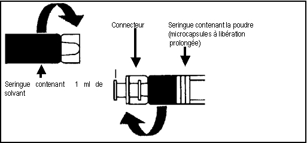

RÉSUMÉ DES CARACTÉRISTIQUES DU PRODUIT
ANSM - Mis à jour le : 02/08/2013
GONAPEPTYL 3,75 mg, poudre et solvant pour suspension injectable à libération prolongée en seringues pré-remplies
2. COMPOSITION QUALITATIVE ET QUANTITATIVE
Triptoréline ..................................................................................................................................... 3,75 mg
Sous forme d'acétate de triptoréline *
Pour une seringue pré-remplie.
*A mettre en suspension dans 1 ml de solvant
Excipients: sodium (3,69 mg/ml équivalent à 0,160 mmol/ml après reconstitution)
Pour la liste complète des excipients, voir rubrique 6.1.
Poudre et solvant pour suspension injectable à libération prolongée en seringues pré-remplies.
Avant reconstitution:
Poudre blanche à légèrement jaune
Solvant aqueux incolore.
Après reconstitution:
Suspension homogène blanc laiteux à légèrement jaune.
4.1. Indications thérapeutiques
Hommes:
Traitement du cancer de la prostate hormono-dépendant localement avancé ou métastatique.
Femmes:
Réduction préopératoire de la taille du fibrome pour diminuer les hémorragies et la douleur en cas de fibromes utérins symptomatiques.
Endométriose symptomatique confirmée par une laparoscopie, pour laquelle une suppression de l'hormonogenèse ovarienne est indiquée dans la mesure où un traitement chirurgical n'est pas indiqué en première intention.
Enfants:
Traitement de la puberté précoce centrale avérée (avant 9 ans pour les filles, avant 10 ans pour les garçons).
4.2. Posologie et mode d'administration
Ce produit doit être utilisé sous la stricte surveillance d'un spécialiste, disposant des moyens appropriés pour une surveillance régulière de la réponse.
Le traitement des enfants par la triptoréline doit être réalisé sous la responsabilité d'un pédiatre endocrinologue ou d'un pédiatre ou d'un endocrinologue ayant l'expérience du traitement de la puberté précoce centrale.
Il est important que la forme à libération prolongée soit injectée en respectant strictement les instructions figurant dans la rubrique 6.6.
Après la reconstitution, la suspension doit être injectée immédiatement.
Posologie et mode d'administration
Administrer la dose contenue dans une seringue, soit l'équivalent de 3,75 mg de triptoréline, tous les 28 jours, soit par voie sous-cutanée (p. ex. dans la peau de l'abdomen, de la fesse ou de la cuisse), soit par voie intramusculaire profonde.
Changer de site d'injection à chaque nouvelle injection.
Hommes:
Toutes les quatre semaines, injecter le contenu d'une seringue, soit l'équivalent de 3,75 mg de triptoréline. Pour supprimer en permanence les taux de testostérone, il est important de respecter le rythme d'administration d'une fois toutes les 4 semaines.
Femmes:
· Fibromes utérins et endométriose:
Toutes les quatre semaines, injecter le contenu d'une seringue, soit l'équivalent de 3,75 mg de triptoréline. Le traitement doit débuter dans les 5 premiers jours du cycle.
Enfants:
En début de traitement, la posologie doit être déterminée en fonction du poids; une injection de triptoréline aux jours 0, 14 et 28, puis une injection toutes les 4 semaines. En cas d'effet insuffisant, les injections peuvent être répétées toutes les trois semaines.
La posologie sera fonction du poids corporel; voir tableau ci-dessous:
|
Poids corporel |
Posologie |
|
|
< 20 kg |
1,875 mg (demi-dose) |
|
|
20 - 30 kg |
2,5 mg (2/3 dose) |
|
|
> 30 kg |
3,75 mg (dose complète) |
Populations particulières de patients:
· Il est inutile d'ajuster la dose chez le sujet âgé.
· D'après les données actuelles, il n'est pas nécessaire de réduire la dose ou d'espacer les injections chez les patients atteints d'insuffisance rénale.
Durée d'administration
Cancer de la prostate:
GONAPEPTYL est habituellement administré en traitement au long cours.
Fibromes utérins et endométriose:
La durée du traitement dépend du degré de gravité initial de l'endométriose et de l'évolution de ses manifestations cliniques (fonctionnelles et anatomiques) et de l'évolution du volume des fibromes utérins, déterminée par échographie pendant le traitement. Normalement, le résultat optimal est obtenu après 3 ou 4 injections.
En raison de ses effets potentiels sur la densité osseuse, la durée du traitement ne devra pas dépasser 6 mois (voir 4.4).
Puberté précoce centrale (PPC):
Le traitement doit être interrompu dès qu'une maturation osseuse correspondant à l'âge de plus de 12 ans chez les filles et de plus de 13 ans chez les garçons est obtenue.
Générales:
· Hypersensibilité à la triptoréline ou à l'un des excipients du produit.
· Hypersensibilité à l'hormone naturelle de libération des gonadotrophines (GnRH) ou à ses analogues.
Chez la femme:
· Grossesse.
· Allaitement.
4.4. Mises en garde spéciales et précautions d'emploi
L’administration d’agoniste de la GnRH peut entraîner une réduction de la densité osseuse. Chez les hommes des données préliminaires suggèrent que l’administration de biphosphonates, en association avec l’agoniste de la GnRH peut réduire cette perte de densité osseuse.
Une surveillance particulière s’impose chez les patients présentant des facteurs de risque d’ostéoporose supplémentaires tels que les sujets alcooliques chroniques, les fumeurs, un traitement au long cours par des médicaments réduisant la densité osseuse (anticonvulsifs ou corticoïdes), les antécédents familiaux d’ostéoporose, une malnutrition.
Rarement, le traitement par les agonistes de la GnRH a mis en évidence un adénome hypophysaire gonadotrope non diagnostiqué au préalable. Dans ce cas, l’apoplexie hypophysaire peut se manifester sous forme de céphalées brutales, de vomissements, de troubles visuels, et d’une ophtalmoplégie.
Il existe un risque accru de survenue de dépression incidente (qui peut être sévère) chez les patients traités par agonistes de la GnRH, tels que la triptoréline. Les patients doivent être informés en conséquence et traités de façon appropriée si des symptômes apparaissent.
Des cas de changements d’humeur ont été rapportés. Les patients souffrant de dépression connue devront être attentivement surveillés pendant le traitement.
Hommes :
En début de traitement, la triptoréline, comme les autres agonistes de la GnRH, entraîne une élévation transitoire des concentrations sériques de testostérone. Des cas isolés d’aggravation transitoire des signes et symptômes du cancer de la prostate résultant de cette élévation transitoire de la testostéronémie peuvent parfois apparaître durant les premières semaines de traitement. A l’initiation du traitement, l’administration associée d’un anti-androgène approprié qui va s’opposer à l’élévation initiale de la testostéronémie et à l’exacerbation des symptômes cliniques, doit être prise en considération.
Chez quelques patients, on peut observer une aggravation transitoire des signes et symptômes de leur cancer de la prostate (effet flare-up) et une augmentation transitoire de la douleur liée au cancer (douleur métastatique). Ceci peut être pris en charge de manière symptomatique.
Comme avec les autres agonistes de la GnRH, des cas isolés de compression médullaire et d’obstruction urétrale ont été observés. L’apparition d’une compression médullaire ou d’une insuffisance rénale impose l’instauration d’un traitement standard de ces complications, et dans les cas extrêmes, la réalisation en urgence d’une orchidectomie (castration chirurgicale). Les patients présentant notamment des métastases vertébrales avec risque de compression médullaire ainsi que ceux ayant une obstruction des voies urinaires devront être étroitement surveillés pendant les premières semaines de traitement.
Après la castration chirurgicale, la triptoréline n’entraîne pas de diminution supplémentaire de la testostéronémie.
Une suppression androgénique au long cours obtenue soit par orchidectomie bilatérale soit par administration d’analogues de la GnRH est associée à un risque accru de diminution de densité minérale osseuse, susceptible de conduire à l’ostéoporose ainsi qu’à un risque accru de fracture osseuse.
De plus, il ressort des données épidémiologiques que des modifications métaboliques (comme l’intolérance au glucose) ou une augmentation du risque de maladie cardiovasculaire peuvent survenir chez les patients traités par suppression androgénique. Néanmoins, la corrélation entre le traitement par analogues de la GnRH et l’augmentation de la mortalité cardiovasculaire n’a pas été confirmée par les données prospectives. Les patients à haut risque de maladies métaboliques ou cardiovasculaires doivent être attentivement évalués avant l’instauration du traitement et étroitement surveillés pendant le traitement par suppression androgénique.
L’administration de la triptoréline aux doses thérapeutiques a pour effet la suppression de l’activité de la fonction gonadique d’origine hypophysaire. Dès l’arrêt du traitement, le fonctionnement normal du système est habituellement restauré. Les tests de diagnostic de l’activité gonadique d’origine hypophysaire menés durant le traitement et après le traitement par les analogues de la GnRH peuvent donc être trompeurs.
Femmes :
GONAPEPTYL ne doit être prescrit qu’après un diagnostic précis (par exemple après laparoscopie).
Il est indispensable de vérifier, avant toute prescription de triptoréline, l’absence de grossesse.
Etant donné qu’il ne doit pas y avoir de menstruations pendant le traitement par Gonapeptyl, il doit être conseillé à la patiente de consulter un médecin si des menstruations régulières persistent.
Perte de la densité osseuse :
Une durée de 6 mois de traitement par agoniste de la GnRH est susceptible de réduire la densité osseuse de 1% par mois en moyenne. Chaque réduction de 10% de la densité osseuse est liée à une augmentation du risque de fracture multiplié par un facteur de 2 à 3 environ. Pour cette raison, un traitement sans supplémentation en retour ne devra pas durer plus de 6 mois. A l’arrêt du traitement, les pertes de densité osseuse sont habituellement réversibles dans un délai de 6 à 9 mois.
D’après les données actuellement disponibles, la récupération de la perte de la densité osseuse survient après l’arrêt du traitement chez la majorité des femmes.
On ne dispose pas de données spécifiques chez les patientes ayant une ostéoporose pré-existante ou présentant des facteurs de risque d’ostéoporose (sujets alcooliques chroniques, fumeurs, traitement au long cours par des médicaments entraînant une diminution de la densité osseuse (exemple : anticonvulsifs ou corticoïdes), antécédents familiaux d’ostéoporose, malnutrition secondaire à l’anorexie mentale par exemple. Etant donné que la réduction de la densité osseuse est susceptible d’être plus néfaste chez ces patientes, il est indispensable, avant la mise en place d’un traitement par la triptoréline, de prendre en considération les particularités individuelles de chaque patiente. Le traitement par la triptoréline est à initier uniquement après avoir soigneusement apprécié le bénéfice du traitement par rapport au risque. La prise de mesures complémentaires destinées à palier les pertes de la densité osseuse doit être envisagée.
Fibromes et endométriose :
Toute métrorragie survenant au cours du traitement (sauf le premier mois) est anormale et doit conduire à la vérification du taux plasmatique d’estrogènes. Si ce taux est inférieur à 50 pg/ml, la recherche d'éventuelles lésions organiques associées doit être effectuée. Après l’arrêt du traitement, la fonction ovarienne reprend ; ainsi, les règles surviennent 7 à 12 semaines après la dernière injection.
L’ovulation pouvant être déclenchée par la libération initiale de gonadotrophines, les patientes doivent suivre une contraception non hormonale le premier mois du traitement, ainsi que dans la période allant de 4 semaines après la dernière injection jusqu’à la reprise des règles – ou jusqu’à ce qu’une autre méthode contraceptive soit adoptée.
Au cours du traitement des fibromes utérins, la taille de l’utérus et celle du fibrome doivent être régulièrement déterminées, par exemple par échographie. Une réduction anormalement rapide de la taille de l’utérus par comparaison à la réduction du tissu myomateux a entraîné dans quelques rares cas une hémorragie et une infection.
Quelques cas de saignement chez des patientes présentant des fibromes sous-muqueux et traitées par un analogue de la GnRH ont été rapportés. Généralement, le saignement est survenu 6 à 10 semaines après l’instauration du traitement.
Enfants :
Le traitement doit débuter avant l'âge de 9 ans chez les filles et 10 ans chez les garçons.
Chez les filles, à l’initiation du traitement, la stimulation ovarienne initiale, suivie de la privation d’estrogènes induite par le traitement, peut entraîner, dans les premiers mois, des saignements vaginaux d’intensité faible à modérée.
Le développement de caractères sexuels secondaires réapparaît à l’arrêt du traitement. Les données concernant la fonction de reproduction future restent limitées. Les règles apparaissent pour la majorité des jeunes filles un an en moyenne après la fin du traitement et elles sont le plus souvent régulières.
La densité osseuse peut diminuer pendant le traitement par les analogues de la GnRH chez les enfants souffrant d’une puberté précoce centrale. Toutefois, après arrêt de traitement, la normalisation ultérieure de la masse osseuse est préservée et le pic de la masse osseuse, observé en fin d’adolescence, ne semble pas être affecté.
Un glissement épiphysaire fémoral peut être observé à l’arrêt du traitement par GnRH.
En théorie, les faibles concentrations d’estrogènes durant le traitement par agonistes de la GnRH affaibliraient le cartilage de croissance épiphysaire. L’augmentation de la vitesse de croissance après arrêt de traitement aboutirait donc à une diminution des contraintes mécaniques responsables du déplacement de l’épiphyse.
Chez les enfants présentant une tumeur cérébrale évolutive, une appréciation rigoureuse du rapport bénéfice/risque du traitement s’impose pour chaque patient.
Il convient d’exclure les cas de puberté pseudo-précoce (tumeur ou hyperplasie gonadique ou cortico-surrénalienne) et de puberté précoce indépendante de l'hormone gonadotrope (toxicose testiculaire, hyperplasie familiale des cellules de Leydig).
Des réactions allergiques et anaphylactiques ont été décrites chez l’adulte et chez l’enfant incluant les réactions locales au site d’injection et les réactions systémiques. Leur pathogenèse n’a pas été élucidée. Ces réactions sont observées plus fréquemment chez les enfants.
4.5. Interactions avec d'autres médicaments et autres formes d'interactions
La prudence s'imposera lorsque la triptoréline sera administrée en même temps que des médicaments affectant la sécrétion hypophysaire des gonadotrophines et le statut hormonal du patient devra être surveillé.
Aucune étude formelle d'interaction avec d'autres médicaments n'a été réalisée. La possibilité d'interaction avec des médicaments habituellement utilisés dont les produits libérateurs d'histamine, ne peut pas être exclue.
Avant l'instauration du traitement, les femmes en âge de procréer doivent faire l'objet d'un examen attentif pour exclure toute grossesse.
Les très rares données sur l'usage de la triptoréline pendant la grossesse n'indiquent pas d'augmentation du risque de malformations congénitales. Toutefois, les études de suivi au long cours sur le développement sont limitées. Les résultats des études chez l'animal n'ont pas mis en évidence d'effets dommageables directs ou indirects sur la grossesse ou le développement post-natal, mais ont été mis en évidence des signes de foeto-toxicité et de retard à la parturition. Au vu des effets pharmacologiques, un effet indésirable sur la grossesse et la descendance ne peut être exclu et, de ce fait, GONAPEPTYL ne doit pas être administré aux femmes enceintes.
Les femmes en âge de procréer devront utiliser une méthode contraceptive non hormonale fiable durant le traitement et jusqu'à la reprise des règles.
Le passage de la triptoréline dans le lait maternel n'est pas connu. En raison du risque d'effets indésirables de la triptoréline chez le nourrisson, l'allaitement doit être interrompu avant et pendant le traitement.
4.7. Effets sur l'aptitude à conduire des véhicules et à utiliser des machines
Aucune étude sur les effets sur l'aptitude à conduire des véhicules et à utiliser des machines n'a été réalisée. Toutefois, les étourdissements, un état de somnolence et les troubles visuels étant des effets indésirables du traitement ou résultant de la maladie sous-jacente, l'aptitude à conduire des véhicules et à utiliser des machines peut être altérée chez certains patients.
Du fait de l'augmentation des taux de testostérone pendant la première semaine de traitement, une aggravation de la symptomatologie générale et des plaintes peuvent être rapportées (obstruction urinaire, douleurs osseuses dues à des métastases, compression médullaire, fatigue musculaire et œdème lymphatique des jambes). Dans certains cas, il a été observé une obstruction des voies urinaires avec altération de la fonction rénale. Des cas de compression neurologique, s'accompagnant d'une asthénie et d'une paresthésie dans les jambes ont été observés.
Tolérance générale chez les hommes (Cf « Mises en garde spéciales et précautions d’emploi »)
Comme observé avec les autres agonistes de la GnRH ou après castration chirurgicale, les effets indésirables les plus fréquemment observés au cours du traitement par la triptoréline sont des conséquences prévisibles des effets pharmacologiques : élévation initiale du taux de testostérone, suivie par une suppression presque complète de la sécrétion de la testostérone. Ces effets comprennent des bouffées de chaleur (50%), dysfonction érectile et baisse de la libido.
Les effets indésirables suivants, susceptibles d’être liés au traitement par la triptoréline, ont été rapportés. La plupart d’entre eux sont connus pour être liés à la castration biochimique ou chirurgicale.
MedDRA Système classe organe
|
Très fréquent (≥1/10) |
Fréquent (≥1/100, <1/10) |
Peu fréquent (≥1/1000, <1/100) |
Indéterminé
|
|
Hommes |
||||
|
Infections et infestations |
|
|
|
Rhinopharyngite |
|
Affections du système immunitaire |
|
Hypersensibilité |
Réactions anaphylactiques |
|
|
Troubles du métabolisme et nutritionnel |
|
|
Perte d’appétit |
Augmentation de l’appétit, goutte, diabète sucré |
|
Affections psychiatriques |
Baisse de la libido |
Changements d’humeur, humeur dépressive, dépression, trouble du sommeil |
|
Insomnie, état confusionnel, baisse d’activité, euphorie, anxiété, perte de libido |
|
Affections du système nerveux |
|
Céphalées |
|
Etourdissements, paresthésie, troubles de la mémoire, dysgueusie, somnolence; dystasie |
|
Affections oculaires |
|
|
|
Sensation anormale dans l’œil, troubles visuels, vision trouble |
|
Affections de l’oreille et du labyrinthe |
|
|
|
Acouphènes, vertiges |
|
Affections vasculaires |
Bouffées de chaleur |
|
Embolie, hypertension |
Hypotension |
|
Affections respiratoires, thoraciques, médiastinales |
|
|
Aggravation de l’asthme |
Dyspnée, orthopnée, épistaxis |
|
Affections gastro-intestinales |
|
Nausées |
Epigastralgies, sécheresse de la bouche |
Douleurs abdominales, constipation, diarrhées, vomissements, distension abdominale, flatulence, gastralgie |
|
Affections de la peau et du tissu sous-cutané |
|
Hyperhidrose |
Hypotrichose, alopécie |
Acné, prurit, rash, bulles, œdème de Quincke, urticaire, purpura |
|
Affections musculo-squelettiques et systémiques |
Douleurs osseuses |
Myalgies ; arthralgies |
|
Douleurs dorsales, douleurs musculo-squelettiques, douleurs aux extrémités, spasmes musculaires, faiblesse musculaire, raideurs articulaires, gonflement des articulations, raideurs musculo-squelettiques, arthrose |
|
Affections du rein et des voies urinaires |
Dysurie |
|
|
|
|
Affections des organes de la reproduction et du sein |
Dysfonction érectile |
Gynécomastie |
Atrophie testiculaire |
Douleur mammaire, douleur testiculaire, trouble de l’éjaculation |
|
Troubles généraux et anomalies au site d’administration |
|
Fatigue, réaction et/ou douleur au site d’injection, irritabilité |
|
Asthénie, érythème au site d’injection, inflammation au site d’injection, œdème, douleurs, frissons, douleurs thoraciques, syndrome pseudo-grippal, fièvre, malaise |
|
Investigations |
|
|
Augmentation des taux des ASAT (aspartate aminotransférase), ALAT (alanine aminotransférase), LDH, gGT, variations du poids corporel |
Augmentation de créatininémie, de la pression artérielle, de l’urémie, des phosphatases alcalines sériques, de la température corporelle |
La triptoréline provoque une augmentation transitoire du taux de testostérone circulante dans la première semaine suivant l’injection initiale du médicament à action prolongée. Du fait de cette élévation initiale des taux de testostérone circulante, un faible pourcentage de patients (≤ 5%) peut ressentir une aggravation temporaire des signes et des symptômes de leur cancer de la prostate (flambée de la tumeur). Les manifestations se traduisent généralement par une augmentation des symptômes urinaires (<2%) et de la douleur métastatique (5%), qui peuvent être gérées de façon symptomatique. Ces symptômes sont transitoires et disparaissent généralement en une à deux semaines.
Des cas isolés d'exacerbation des symptômes de la maladie, soit obstruction urétrale soit compression médullaire par des métastases ont été observés. Par conséquent, les patients ayant des lésions vertébrales métastatiques et/ou ayant une obstruction des voies urinaires supérieures ou inférieures doivent être attentivement surveillés pendant les premières semaines de traitement (voir Mises en garde spéciales et précautions d'emploi).
L'administration d'agonistes de la GnRH, pour traiter le cancer de la prostate peut être associée à une augmentation de la perte de la densité osseuse qui peut conduire à l'ostéoporose et augmenter le risque de fracture osseuse.
Tolérance générale chez les femmes (voir Mises en garde spéciales et précautions d'emploi)
Suite à la baisse des taux d'estrogène, les événements indésirables les plus fréquemment rapportés (attendus chez 10% des femmes ou plus) ont été : céphalées, baisse de la libido, troubles du sommeil, changements d’humeur, dyspareunie, dysménorrhée, hémorragies génitales, syndrome d'hyperstimulation ovarienne, hypertrophie ovarienne, douleur pelvienne, douleurs abdominales, sécheresse vaginale, hyperhidrose, bouffées de chaleur et asthénie.
Les effets indésirables suivants, susceptibles d’être liés au traitement par la triptoréline, ont été rapportés. La plupart d'entre eux sont connus pour être liés à la castration biochimique ou chirurgicale.
MedDRA
Système classe organe
|
Très fréquent (≥1/10) |
Fréquent (≥1/100, <1/10) |
Peu fréquent (≥1/1000, <1/100) |
Indéterminé
|
|
Femmes |
||||
|
Affections du système immunitaire |
|
Hypersensibilité |
Réaction anaphylactique |
|
|
Affections psychiatriques |
Baisse de la libido, changements d’humeur, troubles du sommeil |
Humeur dépressive, dépression |
|
Etat confusionnel, anxiété |
|
Affections du système nerveux |
Céphalées |
|
Paresthésies |
Etourdissements |
|
Affections oculaires |
|
|
Troubles visuels |
Vision trouble |
|
Affections de l’oreille et du labyrinthe |
|
|
|
Vertiges |
|
Affections vasculaires |
Bouffées de chaleur |
|
|
|
|
Affections respiratoires, thoraciques, médiastinales |
|
|
|
Dyspnée |
|
Affections gastro-intestinales |
Douleurs abdominales |
Nausées |
|
Gêne abdominale, diarrhées, vomissements |
|
Affections de la peau et du tissu sous-cutané |
Hyperhidrose |
|
|
Prurit, rash, œdème de Quincke, urticaire |
|
Affections musculo-squelettiques et systémiques |
Douleurs osseuses |
Myalgie, arthralgie |
Dorsalgies |
Troubles osseux (*), spasmes musculaires, faiblesse musculaire |
|
Affections des organes de la reproduction et du sein |
Hémorragies vaginales, sécheresse vaginale, dyspareunie, dysménorrhée, syndrome d’hyperstimulation ovarienne, hypertrophie ovarienne, douleurs pelviennes |
|
|
Douleur mammaire, ménorragie, métrorragie, aménorrhée |
|
Troubles généraux et anomalies au site d’administration |
Asthénie |
Fatigue, réaction et/ou douleur au site d’injection, irritabilité |
|
Erythème au site d’injection, inflammation au site d’injection, fièvre, malaise |
|
Investigations |
|
|
Augmentation des taux des ASAT (aspartate aminotransférase), ALAT (alanine aminotransférase), LDH, gGT, de la cholestérolémie |
Augmentation de la pression artérielle, variations du poids corporel |
(*) Une légère perte osseuse trabéculaire peut survenir. Elle est généralement réversible dans les 6 à 9 mois après l’arrêt du traitement (voir rubrique 4.4).
Au début du traitement, les symptômes d’endométriose : douleurs pelviennes, dysménorrhée, sont susceptibles d’être exacerbés très fréquemment (≥ 10%) pendant l’augmentation initiale et transitoire des taux plasmatiques d’estradiol. Ces symptômes sont transitoires et disparaissent généralement en une à deux semaines.
Une hémorragie génitale incluant la ménorragie, la métrorragie est susceptible de survenir le mois suivant la première injection. Une hypertrophie ovarienne ainsi que des douleurs pelviennes et/ou abdominales peuvent être observées.
Tolérance générale chez les enfants (voir Mises en garde spéciales et précautions d'emploi)
MedDRA
Système classe organe
|
Très fréquent (≥1/10) |
Fréquent (≥1/100, <1/10) |
Peu fréquent (≥1/1000, <1/100) |
Indéterminé
|
|
Enfants
|
||||
|
Affections du système immunitaire |
|
|
Réaction anaphylactique |
Réaction d’hypersensibilité |
|
Affections psychiatriques |
|
Changements d’humeur, dépression |
|
Instabilité affective, nervosité |
|
Affections du système nerveux |
|
|
|
Céphalées |
|
Affections oculaires |
|
|
|
Vision trouble, trouble de la vision |
|
Affections vasculaires |
|
|
|
Bouffées de chaleur |
|
Affections respiratoires, thoraciques et médiastinales |
|
|
|
Epistaxis |
|
Affections gastro-intestinales |
|
|
Nausées, vomissements |
Gêne abdominale, douleurs abdominales |
|
Affections de la peau et du tissu sous-cutané |
|
|
|
Rash, œdème de Quincke, urticaire, alopécie, érythème |
|
Affections musculo-squelettiques et systémiques |
|
|
|
Épiphysiolyse (*), myalgie |
|
Affections des organes de la reproduction et du sein |
|
|
Hémorragie vaginale, pertes vaginales |
Hémorragie génitale |
|
Troubles généraux et anomalies au site d’administration |
|
|
|
Erythème au site d'injection, inflammation au site d'injection, malaise, douleur, douleur au site d'injection |
|
Investigations |
|
|
|
Augmentation de la pression artérielle, prise de poids |
(*) Quelques cas d’épiphysiolyse de la tête fémorale supérieure ont été décrits au cours d’un traitement par triptoréline.
Des cas de développement d’adénomes hypophysaires pré-existants ont été rapportés pendant un traitement avec des agonistes de la GnRH. Néanmoins, aucun cas n’a été observé avec la triptoréline.
Peu d'informations sur des cas de surdosage à la triptoréline sont disponibles, pour pouvoir en tirer des conclusions sur les effets indésirables possibles. Compte-tenu de la forme galénique et du conditionnement, un surdosage est improbable.
Dans le cas d'un surdosage, un traitement symptomatique est préconisé.
5. PROPRIETES PHARMACOLOGIQUES
5.1. Propriétés pharmacodynamiques
Analogue de la gonadoréline, hormone entraînant la libération de gonadotrophines.
Code ATC: L02AE04: analogues de l'hormone entraînant la libération de gonadotrophine.
La triptoréline est un décapeptide de synthèse analogue de la gonadoréline, l'hormone naturelle de libération des gonadotrophines (GnRH). La GnRH est un décapeptide qui est synthétisé par l'hypothalamus et qui régule la synthèse et la libération de la LH (hormone lutéinisante) et de la FSH (hormone de stimulation folliculaire) par l'hypophyse. Sous l'effet de la triptoréline, l'hypophyse secrète plus fortement de la LH et de la FSH qu'elle ne le ferait après une dose comparable de gonadoréline, et sa durée d'action est plus longue. L'élévation des taux de LH et de FSH induit initialement une augmentation des concentrations sériques en testostérone (flare-up) chez l'homme ou en œstrogènes chez la femme.
La poursuite du traitement entraîne une diminution des taux de LH et de FSH conduisant à une diminution des taux sériques d'estradiol chez les femmes et de la testostérone chez les hommes, correspondants respectivement à ceux observés lors de la ménopause ou de la castration, c'est à dire à un état d'hypogonadisme-hypogonadot rophique. Chez les enfants en puberté précoce, les concentrations d'estradiol ou de testostérone descendent à un niveau pré-pubertaire. Les concentrations plasmatiques en DHEAS (sulfate de dihydroépiandrostènedione) ne sont pas modifiées.
Au plan thérapeutique, cela conduit à un ralentissement de la croissance des tumeurs prostatiques sensibles à la testostérone chez l'homme et à une réduction des foyers d'endométriose et des fibromes utérins estrogénodépendants chez la femme. En ce qui concerne les fibromes utérins, le bénéfice maximum du traitement est observé chez les femmes anémiques (hémoglobine ≤ 8 g/dl). Chez les enfants atteints de PPC, le traitement par triptoréline entraîne une inhibition des sécrétions des gonadotrophines, d'estradiol et de testostérone, qui sont réduites à des taux prépubertaires. Cela se traduit par l'arrêt, voire la régression, des signes pubertaires et par une augmentation de la taille prédictive à l'âge adulte chez les enfants en PPC.
5.2. Propriétés pharmacocinétiques
Après administration intramusculaire de Gonapeptyl, les concentrations plasmatiques en triptoréline sont fonction de la (lente) dégradation du polymère poly-(d, l lactide coglycolide). La forme galénique de Gonapeptyl permet une libération lente de la triptoréline à partir de ce polymère.
Après injection intramusculaire ou sous-cutanée d'une forme dépôt de la triptoréline (micro capsules à libération prolongée), une rapide augmentation de la concentration plasmatique en triptoréline est observée, la valeur maximale est atteinte au cours des premières heures. La concentration en triptoréline diminue ensuite fortement dans les 24 heures. Au quatrième jour, la valeur atteint un second pic pour redescendre ensuite après 44 jours au-dessous de la limite de détection selon une cinétique bi-exponentielle. Après injection sous-cutanée, l'augmentation de la triptoréline est plus progressive et les concentrations atteintes sont légèrement plus faibles qu'après injection intramusculaire. Après injection sous -cutanée, la diminution de la concentration en triptoréline est plus lente, des valeurs en dessous de la limite de détection n'étant atteintes qu'après 65 jours.
Au cours d'un traitement de plus de 6 mois à raison d'une administration tous les 28 jours, aucun signe d'accumulation de la triptoréline n'a été observé pour aucune de ces deux voies d'administration. Les concentrations plasmatiques en triptoréline ont diminué jusqu'à environ 100 pg/ml avant l'injection suivante après injection intramusculaire ou sous-cutanée (valeurs médianes). Il est possible de supposer que la proportion de triptoréline non disponible au niveau systémique est métabolisée au site d'injection, par ex. par les macrophages.
Au niveau de l'hypophyse, la triptoréline disponible au niveau systémique est inactivée par clivage N-terminal par la pyroglutamyl-peptidase et par une endopeptidase neutre. Au niveau du foie et des reins, la triptoréline est dégradée en peptides biologiquement inactifs et en acides aminés.
Quarante minutes après la fin d'une perfusion (de plus d'une heure) de 100 µg de triptoréline, 3 à 14% de la dose administrée sont déjà éliminés par le rein.
Chez les patients présentant des altérations de la fonction rénale, un ajustement et une individualisation du traitement ne semblent pas nécessaires avec la formulation dépôt de la triptoréline, du fait de la faible importance de la voie d'élimination rénale et de la marge thérapeutique importante de la triptoréline.
Hommes:
La biodisponibilité systémique du principe actif, la triptoréline, à partir du dépôt intramusculaire est de 38,3% au cours des treize premiers jours. La libération ultérieure est linéaire à raison de 0,92% de la dose par jour en moyenne. La biodisponibilité après injection sous-cutanée est de 69% par rapport à la voie intramusculaire.
Femmes:
Lors d'un test de 27 jours, 35,7% de la dose injectée sont retrouvés, dont 25,5% sont libérés au cours des treize premiers jours, la libération ultérieure étant linéaire à raison de 0,73% de la dose par jour en moyenne.
Généralités:
Le calcul de paramètres cinétiques dépendants du modèle (t1/2, Kel, etc.) n'est pas applicable dans le cas des présentations associées à une libération prolongée du principe actif.
5.3. Données de sécurité préclinique
Chez des rats traités pendant une période prolongée par la triptoréline, une augmentation de la fréquence des tumeurs hypophysaires a été observée. Ce n'est pas le cas chez la souris. L'influence de la triptoréline sur les anomalies hypophysaires chez l'être humain est inconnue. Cette observation chez le rat est jugée non pertinente pour l'espèce humaine. On sait par ailleurs que d'autres analogues de la GnRH peuvent provoquer des tumeurs hypophysaires chez les rongeurs. Il est prouvé que la triptoréline est toxique pour l'embryon/le fœtus et retarde le développement embryonnaire/fœtal et la parturition chez le rat. Les données précliniques ne révèlent aucun risque particulier pour l'homme, d'après les études de toxicité par administration réitérée et de génotoxicité. Des injections IM ou SC uniques de Gonapeptyl ou de son solvant ont provoqué des réactions retardées à corps étranger au site d'injection. En l'espace de 8 semaines, ces réactions tardives avaient presque disparu dans le cas des injections IM, mais n'avaient que faiblement régressé dans le cas des injections SC.
Les données sur la tolérance locale de Gonapeptyl après injection IV sont limitées.
Une seringue préremplie de poudre contient:
Poly-(d,l lactide coglycolide)
Dicaprylocaprate de propylèneglycol
Une seringue pré-remplie de 1 ml de solvant contient:
Dextran 70
Polysorbate 80
Chlorure de sodium
Phosphate monosodique dihydraté
Hydroxyde de sodium
Eau pour préparations injectables
En l'absence d'études de compatibilité, ce produit ne doit pas être mélangé avec d'autres médicaments.
Avant reconstitution: 3 ans.
Après reconstitution: la suspension reconstituée peut être conservée pendant maximum 3 minutes.
6.4. Précautions particulières de conservation
A conserver à une température comprise entre + 2°C et + 8°C (au réfrigérateur).
Conserver les seringues pré-remplies dans l'emballage extérieur.
6.5. Nature et contenu de l'emballage extérieur
6.6. Précautions particulières d’élimination et de manipulation
Gonapeptyl est à usage unique strict. Toute suspension inutilisée doit être jetée.
1. Préparation
Instructions destinées au médecin pour la préparation de la suspension injectable.
Comme la réussite du traitement dépend de la préparation correcte de la suspension injectable, il convient de respecter rigoureusement les instructions suivantes.
· Sortir la boîte de Gonapeptyl du réfrigérateur.
· Retirer le capuchon de la seringue jetable contenant la poudre. Tenir verticalement la seringue pour éviter de répandre la poudre.
· Ouvrir l'emballage contenant le connecteur, sans retirer celui-ci.
· Visser la seringue contenant la poudre (microcapsules à libération prolongée) sur le connecteur encore dans son emballage, puis retirer l'emballage.
· Visser fortement la seringue contenant le diluant pour suspension injectable sur l'extrémité libre du connecteur et vérifier que l'ensemble est parfaitement fixé.

2. Reconstitution de la suspension injectable
Injecter le liquide dans la seringue contenant la poudre, puis pratiquer des allers-retours dans la première seringue - les deux ou trois premières fois sans pousser complètement le piston de la seringue. Répéter cette manœuvre une dizaine de fois ou jusqu'à ce que la suspension ait un aspect homogène et laiteux. Pendant la préparation de la suspension injectable, il est possible qu'une certaine quantité de mousse se forme. Il est important de dissoudre cette mousse ou de l'éliminer de la seringue avant injection.
3. Injection
· Retirer le connecteur en même temps que la seringue vide.
· Monter l'aiguille d'injection sur la seringue contenant la suspension injectable prête à l'emploi.
Injecter immédiatement, par voie sous-cutanée ou intramusculaire profonde.
7. TITULAIRE DE L’AUTORISATION DE MISE SUR LE MARCHE
FERRING SAS
7, rue Jean-Baptiste Clement
94250 Gentilly
8. NUMERO(S) D’AUTORISATION DE MISE SUR LE MARCHE
· 358 446-7: poudre en seringue pré-remplie (verre) + 1 ml de solvant en seringue pré-remplie (verre); boîte de 1.
· 358 447-3: poudre en seringue pré-remplie (verre) + 1 ml de solvant en seringue pré-remplie (verre); boîte de 3.
9. DATE DE PREMIERE AUTORISATION/DE RENOUVELLEMENT DE L’AUTORISATION
[à compléter par le titulaire]
10. DATE DE MISE A JOUR DU TEXTE
[à compléter par le titulaire]
Sans objet.
12. INSTRUCTIONS POUR LA PREPARATION DES RADIOPHARMACEUTIQUES
Sans objet.
Liste I.